浅析红蓝对抗中的蜜罐与虚拟机识别技术
本文所述的一切技术仅供网络安全研究学习之用，请勿用于任何的违法用途，否则由此所产生的一切后果自负！
蜜罐简介
在以前，蜜罐是用来抓熊的。通过伪装成“食物”引诱熊前来享用，最后猎人再将熊一举拿下。
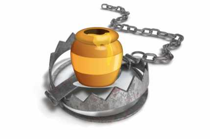
到了今天，蜜罐技术已经成为网络安全中的一种入侵诱饵，目的是引诱黑客前来攻击，并收集黑客相关的证据和信息。所以蜜罐存在的意义就是——被攻击、被探测、被攻陷…
根据部署方式，蜜罐可能被归类为：
-
**生产蜜罐：**易于使用，仅捕获有限的信息，主要由公司使用。生产蜜罐被组织放置在生产网络内与其他生产服务器一起，以改善其整体安全状态。通常生产蜜罐是低交互蜜罐，更易于部署。与研究蜜罐相比，它们提供的攻击或攻击者信息较少。
-
**研究蜜罐：**是为了收集有关针对不同网络的黑客社区的动机和策略的信息。这些蜜罐不会为特定组织增加直接价值; 相反，它们用于研究组织面临的威胁，并学习如何更好地防范这些威胁。研究蜜罐的部署和维护非常复杂，可以捕获大量信息，主要用于研究、军事或政府组织。
目前红蓝对抗中使用的研究型蜜罐偏多，可以记录详细的信息以用于溯源
蜜罐产品分类多样，功能也是各不相同，目前市场上常见的蜜罐非常多，商用成型的蜜罐产品随便一搜都有几十款之多。蜜罐从设计标准上来说分为纯蜜罐，高交互蜜罐，低交互蜜罐
目前来看多数蜜罐为低交互蜜罐，优秀的产品均向高交互蜜罐方向发展，但是由于一些原因导致部分高交互蜜罐容易出现问题，可以被非常方便地检测出来。
纯蜜罐通常来说只存在大量特征，用于单纯地应对扫描器的扫描，这种蜜罐的特征非常明显，访问时通常是空白页，但是在源码中可以看到为隐藏属性的大量关键字，通常用于应对扫描器的识别

在常见的识别工具例如Wappalyzer中也显示出了大量的识别结果（这是新版本的wappalyzer中的显示结果，低置信度的结果会在新版本中根据相应选择算法被丢弃，而在旧版本中会把所有触发检测规则的框架等全部包含，可能显示的数字高达数百至数千）
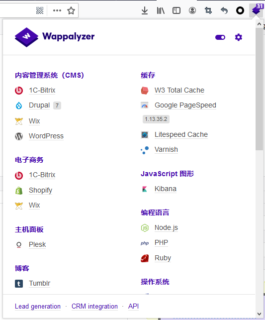
另一款主流蜜罐kippo，在Github上是一款评分相对非常高的蜜罐，遗憾的是已经很多年没有更新了，曾经作为一款蜜罐还是非常火热的，虽然最后一个release版本是14年发布的，但是去年仍有文章在写这款蜜罐
作为较老的蜜罐，其实通过shodan和fofa等网络空间资产搜索引擎还是发现了大量部署了该蜜罐的服务器和设备。根据分析提取特征后发现，这款蜜罐虽然当时比较优秀，但是特征还是很明显的。分析后总结如下：
-
SSH版本固定，返回的banner信息为SSH-2.0-OpenSSH_5.1p1 Debian-5
-
构造畸形包来尝试请求连接，由于kippo协议实现的原因不会像正常的连接一样返回Protocol mismatch，可以作为另一点
基于以上两点就可以快速分辨出目标是否为kippo蜜罐，当然hvv的目标里应该见不太到这类古董了
同样，还有一些低交互蜜罐则可以返回一些简单的命令，以互联网上一款非常热门的开源蜜罐Hfish为例，由于某些原因，我在本地搭建测试的为2020年12月发布的版本，在官方文档中看到的Hifish的描述如下：
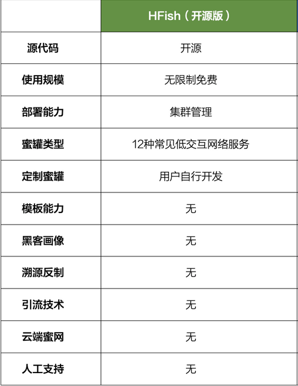
定制蜜罐需要用户自行配置，例如我们在配置文件中可以看到相关服务的启停情况

通过nmap扫描已经开启蜜罐的机器，通过服务识别时给我们的反馈如下：
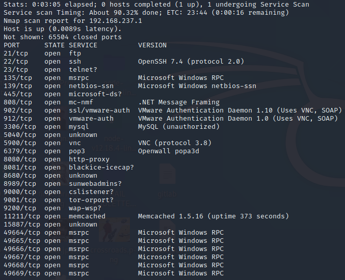
可以看到启动的服务非常之多，常规机器上开启如此多服务的并不常见，开放大量端口的极有可能是蜜罐，另外在做信息收集时肯定会扫描网段，通常蜜罐不会只放置一台，在同一个C段搭数台蜜罐机器是很常见的，如果在同网段发现多数机器开放大量端口且端口相同，请求后的返回相似，有可能部署了一系列的蜜罐。
另外一点检测蜜罐的方式就是通过命令交互，Hfish的规则需要用户自己定义，以ssh为例，通过SSH登录蜜罐
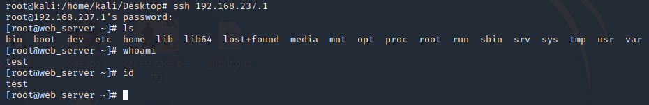
第一个问题就是命令需要自己配置，在ls命令时并没有看出什么明显的问题，但执行whoami和id时无法返回正确的结果，需要我们在配置文件中进行配置，配置文件中默认支持的指令写的非常少
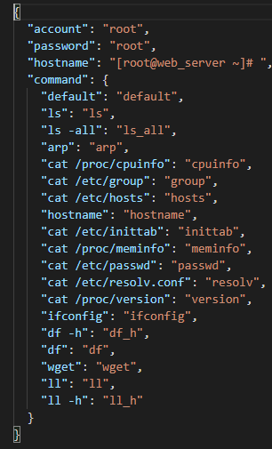
当输入除此以外的命令时，即使输入为空也会返回test
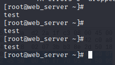
此外，根据其默认提供的ls -all命令，我们也可以尝试一下，可以看到返回的时间均为2017年，明显早于现在，这也是其中一个较为明显的发现点。
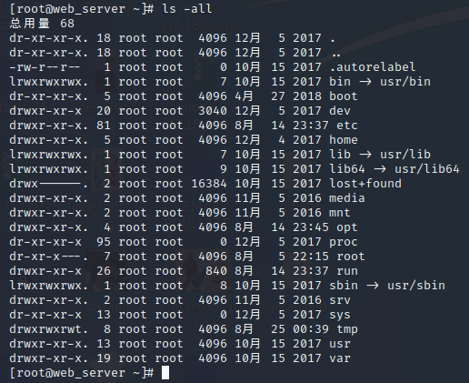
同样再来看一下我们在日常使用的kali上的执行结果，差别很明显就出来了

在没有一定基础的用户使用的时候，通过该种类型的配置漏洞可以很方便地发现问题。不过此时的Hfish配置启用的是高交互ssh蜜罐（也是Hfish的默认配置选项），还可以被配置成低交互状态，此时不能执行命令可以使上述判断无效化，所有的登录请求都会被拒绝
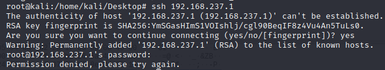
这时候可以避免很多问题，但是经过扫描你会发现开放的端口中会有一些WEB服务，有可能目标机器是真实环境，并且部署了Hfish来捕获攻击，并且相关服务拟真，你无法判断目标服务的真实有效性。如果是蜜罐构造的WEB环境，很有可能存在纰漏，例如HFish的蜜罐构造的假WEB页面，其中只有两个js，并且x.js可以很明显的发现蜜罐特征，并且在溯源反制上，你可以直接通过泄露出的seckey给目标填塞大量的垃圾数据影响蓝队的判断
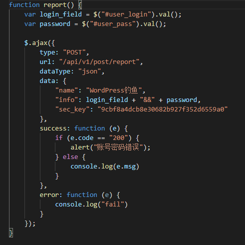
在真实的wordpress中可以则看到大量js，这也可以用于判断
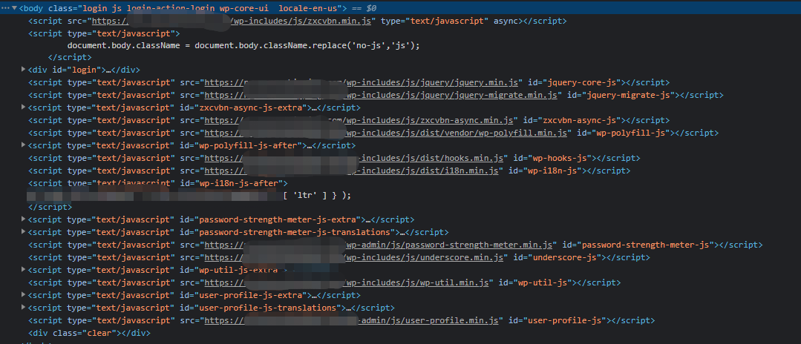
同时还可以根据浏览器的发包请求来判断包内容，包中的钓鱼很明显就告诉攻击者这是个蜜罐
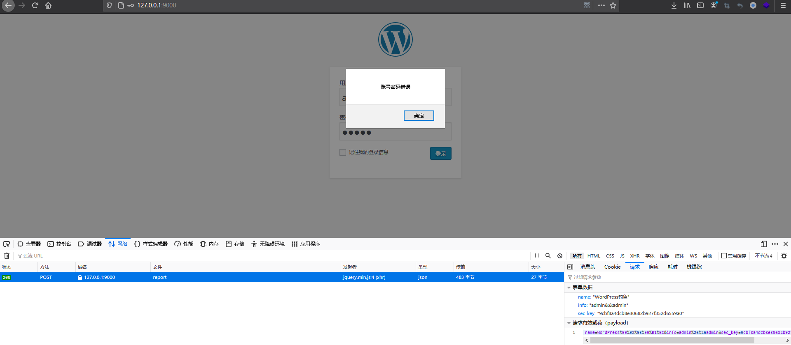
延续上文中讲的C段蜜罐，根据测试结果发现，大部分蜜罐的回应和发包的时间戳都是相对固定的，而物理服务器则会有偏差，通常物理服务器返回的时间戳会存在一定的偏差，我们通过抓包来复现了一下返回过程
首先通过ssh连接机器并且执行了一些命令

至所有命令执行结束时我们一共获取到了129个数据包，分析发出命令的包到收到回包的时间

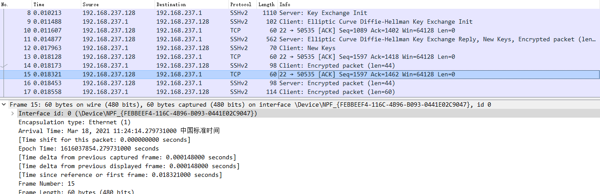
执行前几条命令时响应时间为0.000148s,0.000105s,0.000132s…
我们再开启蜜罐，为了防止其他因素影响，将返回值设置成与之前正常请求kali时相同，但是测试时发生了一个非常尴尬的情况，开启这款蜜罐后所有的传输都是TCP，并没有SSH…又直接暴露了一个问题

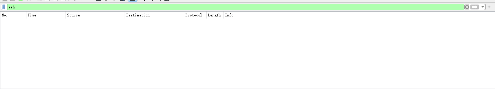
所以根据协议进行识别是一个较为有效的方式，360Quake研究过不少蜜罐的协议实现，以下引用当时的研究结果：拿Dionaea 的Memcached协议举例，在实现Memcached协议时Dionaea把很多参数做了随机化，但是在一些参数如：version、libevent和rusage_user等都是固定的。

总结表如下：

相对其他协议的实现也可以进行深入研究，例如Mysql协议，近期在hvv前夕也涌现出了非常多的开源或闭源的Mysql蜜罐，检测此类蜜罐的步骤可分为如下几步：
-
伪造客户端连接蜜罐mysql服务
-
连接成功发送mysql查询请求
-
接受mysql服务器响应，通过分析伪造的mysql客户端读取文件的数据包得到的报文结构：文件名长度+1 + \x00\x00\x01\xfb + 文件名
以下为正常的链接Mysql数据库的数据包，可以看到其中执行的命令
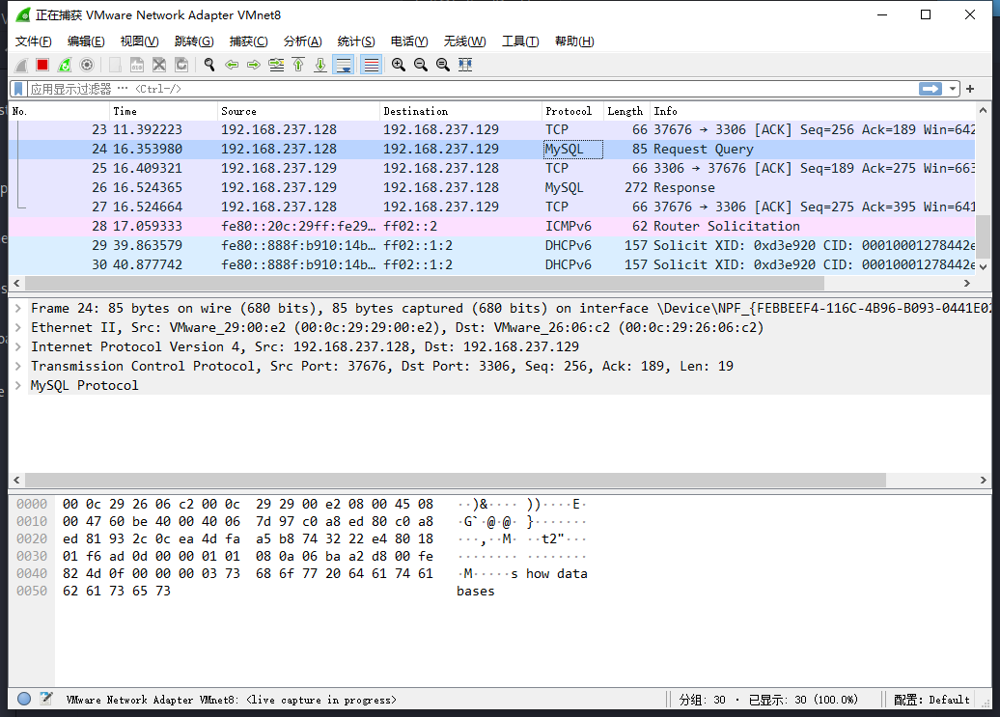
但是在构造的蜜罐中很可能是这样的，因为精心构造的蜜罐中会通过构造一个恶意的mysql服务器，攻击者通过连接恶意的mysql服务器后发送一个查询请求，恶意的mysql服务器将会读取到攻击者指定的文件。

目前市场上另一款较为优秀的中交互蜜罐Crowie，直接通过源码配置较为繁琐，但是可以通过docker来进行搭建。继续来分析一下流量，协议实现较为完善，请求完全正常看不出什么端倪

这款蜜罐优秀在于何处呢？我们执行一些常规命令后似乎并没有办法分辨，可以看到执行了ifconfig,id,cat /proc/couinfo,等操作均有看似正常的回显
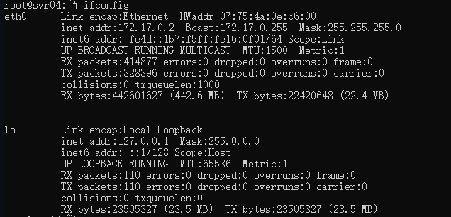
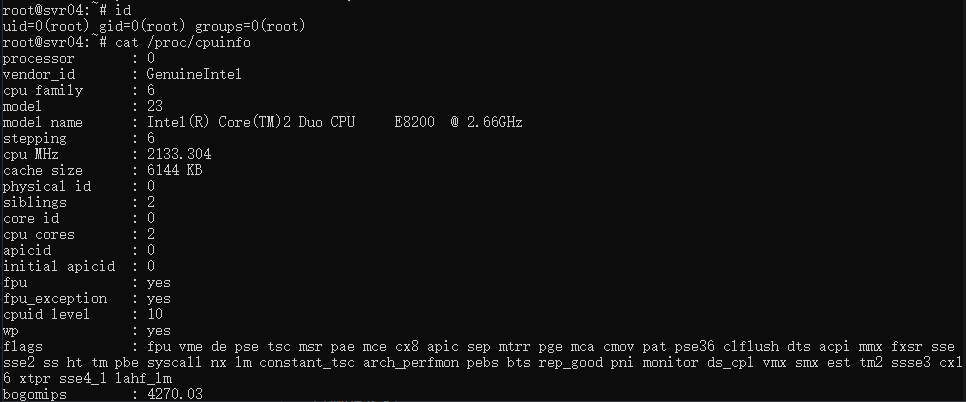
甚至你还可以在目标上装一些东西，连yum install命令都能跑

但是再不断的测试中还是发现了小问题，首先就是一些系统命令，发现find命令没法跑
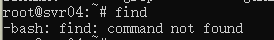
通常find命令直接在/bin目录中，例如我们的centos执行结果如下：
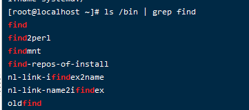
但是在cowrie中，开始出现了一些奇怪的现象，
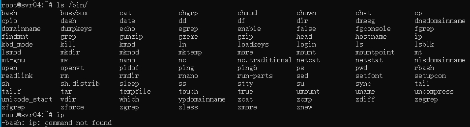
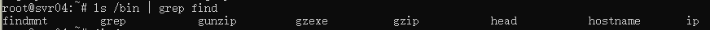
另外在某些交互式的命令上也会出现问题
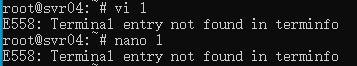
如果说一时半会儿没想到这些命令导致没直接判断出来，这时候通过什么方式来判断呢
目前的虚拟化平台非常多virtual box，qemu，vmware，docker等等，如果蓝队部署蜜罐，为了防止因为配置原因影响真实环境，多数时候会采用在虚拟机中部署的方式来进行，其中高交互并且可以隐藏大部分关键信息时docker部署是非常便捷的方式，目前不少蜜罐都推出了docker版本。那么首先来讲讲docker容器的判断。
部分入门级萌新部署时会留下特征文件.dockerenv文件，通常可以直接通过
ls -alh /.dockerenv
来判断是否为docker环境，但是在定制化程度较高的环境中会没有这个文件，这时候就需要通过其他方式来判断
最有效的一条命令为cat /proc/1/cgroup
在我们的虚拟机上执行命令效果如下：
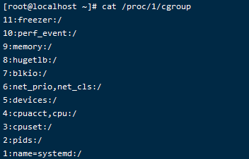
但是在cowrie中执行该命令直接显示为空
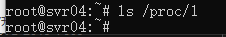
进入容器看看docker中的执行效果
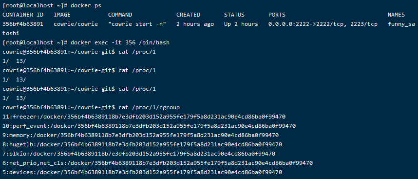
如果对方将一个存在漏洞的环境作为蜜罐搭在docker中，我们getshell后可以轻易判断出目标运行在docker中
另外我们来针对其他虚拟机进行判断，首先针对虚拟机的硬件进行判断，如硬盘信息，通过
cat /proc/scsi
lsscsi
可进行判断,vm的会直接返回明显标识信息
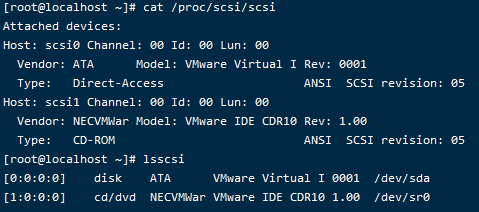
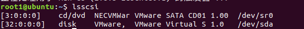
虚拟化的云服务器也可以通过该方式进行判断，例如腾讯云，明显标识QEMU
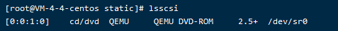
但是在阿里云的轻量应用服务器中没有相关信息
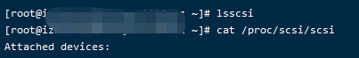
除了硬盘信息以外也可以通过CPU信息进行判断
CPUID指用户计算机当前的信息处理器的信息。CPUID 指令是从 Intel 486 处理器以后开始加入支持的（只要不是古董应该都OK ）。当eax=1时，运行CPUID指令之后，ecx的高31位可以判断出是否在虚拟机中，如果ecx的高31位为0表示在虚拟机下，否则在宿主机中。
可通过如下汇编代码进行检测
BOOL CheckVMWare3()
{
DWORD dwECX = 0;
bool b_IsVM = true;
_asm
{
pushad;
pushfd;
mov eax, 1;
cpuid;
mov dwECX, ecx;
and ecx, 0x80000000; //取最高位
test ecx, ecx; //检测ecx是否为0
setz[b_IsVM]; //为零 (ZF=1) 时设置字节
popfd;
popad;
}
if (b_IsVM) //宿主机
{
return FALSE;
}
else //虚拟机
{
return TRUE;
}
}
将其中代码的核心逻辑剥离出来进行调试，在执行的时候主要变的就是寄存器中的值，在执行cupid后我们可以看到寄存器中值的变化情况
将寄存器中的值提取出来后转为字符串拼接后就可以发现GenuineIntel，如果在AMD的机器上测试结果则为AuthenticAMD，以下为我在自己的机器上测试时编写的汇编代码执行情况，可以看到寄存器中通过popfd出栈后的寄存器值，转换后即为GenuineIntel
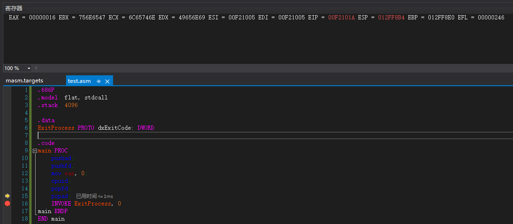
除了CPUID外，还有其他特权指令可用于判断。VMware Workstation 使用“IN”指令来读取特定端口的数据使得物理主机和虚拟机两机之间可以进行通讯。由于“IN”指令属于特权指令，在物理主机操作系统上用户权限不允许使用“IN”指令，错误的执行将会触发异常。“IN”指令受 DX 寄存器影响，运行在 VMware 下时，寄存器 EAX、EBX 和 ECX 用于向 VMware 回传参数。使用“IN”指令从端口 DX 读取 VMware 版本到 EAX 寄存器，若没有触发异常，再判断寄存器 EBX中是否包含 VMware 版本“VMXH”，若是则可以判断运行在虚拟机中。
另外通过ifconfig命令查看MAC地址也可进行判断
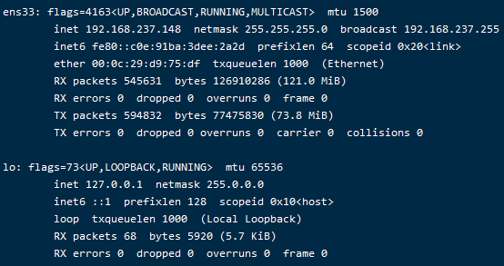
目前主流虚拟化平台的MAC地址段特征如下：
VMware：
00:05:69:xx:xx:xx
00:0c:29:xx:xx:xx
00:50:56:xx:xx:xx
Virtualpc：
00:03:ff:xx:xx:xx
VirtualBox:
08:00:27:xx:xx:xx
Hyper V:
00:15:5D:xx:xx:xx
Xen:
00:16:3e:xx:xx:xx
PCI设备的ID值通常是唯一的，在进行判断时可以使用lspci命令来判断，如下分别为VMware虚拟机和腾讯云上的执行情况
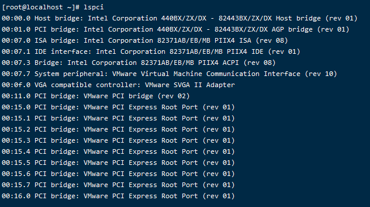
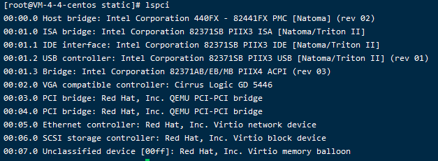
如果针对硬件的检测命令较长，可以直接用dd命令提取mem的内容,以下分别为物理机和虚拟机的输出
sudo dd if=/dev/mem bs=64k skip=12 count=1| strings -n10
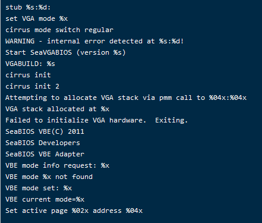
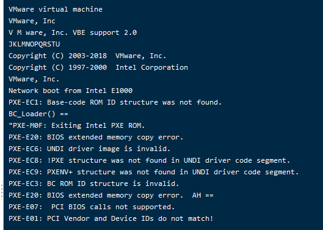
通过判断进程的方式在图形化的vmware虚拟机上较为方便，使用
ps aux | grep vm
命令可以看到图形化的Ubuntu系统中安装的vmwaretools相关进程
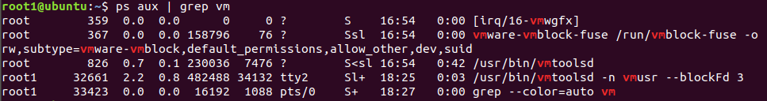
在windows下则有更明显的特征
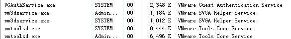
总结后发现个虚拟机进程如下
"VBoxTray.exe"
"VBoxService.exe"
"VMwareUser.exe"
"VMwareTray.exe"
"VMUpgradeHelper.exe"
"vmtoolsd.exe"
"vmacthlp.exe"
在驱动目录下也可以发现大量VM相关驱动
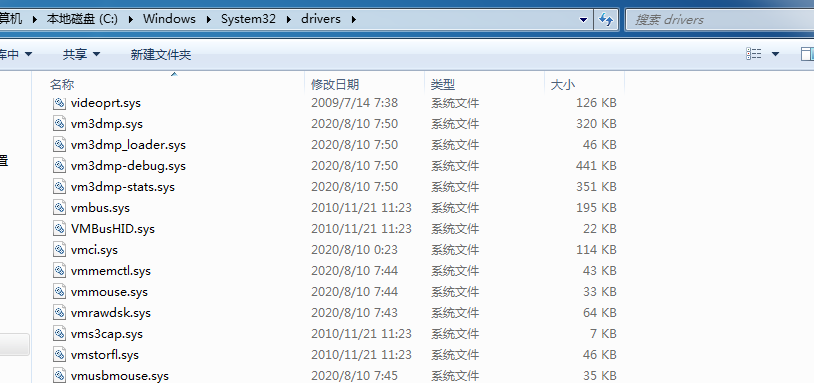
各类虚拟机常见驱动如下：
%system32%\drivers\vmmouse.sys
%system32%\drivers\vmhgfs.sys
%system32%\drivers\VBoxMouse.sys
%system32%\drivers\VBoxGuest.sys
此外，windows机器还可以通过注册表进行判断
HKEY_LOCAL_MACHINE\SYSTEM\ControlSet001\Services\Disk\Enum
0 SCSI\Disk&Ven_VMware_&Prod_VMware_Virtual_S&Rev_1.0\4&5fcaafc&0&000
HKEY_LOCAL_MACHINE\SYSTEM\CurrentControlSet\Enum\SCSI
HKEY_LOCAL_MACHINE\SYSTEM\CurrentControlSet\Enum\SCSI\Disk&Ven_VMware_&Prod_VMware_Virtual_S&Rev_1.0
HKEY_LOCAL_MACHINE\SYSTEM\CurrentControlSet\Enum\IDE\CdRomNECVMWar_VMware_IDE_CDR10_______________1.00____
HKEY_LOCAL_MACHINE\SYSTEM\CurrentControlSet\Services\Disk\Enum
除去以上方法外，现在的商用蜜罐通常做的较为完善，且不少都会直接部署在物理机上，以下收集了部分来自互联网上公开的蜜罐，可以看到考虑非常完善，在真实环境中部署了探针，会将黑客的攻击通过路由等方式引入蜜罐，由于商用蜜罐无法直接取得，因此针对商用蜜罐主要还是已公开的特征检测。其中较好的一款检测工具为Github开源脚本anti-honeypot，其中包含了大量识别蜜罐的规则
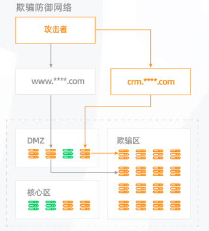
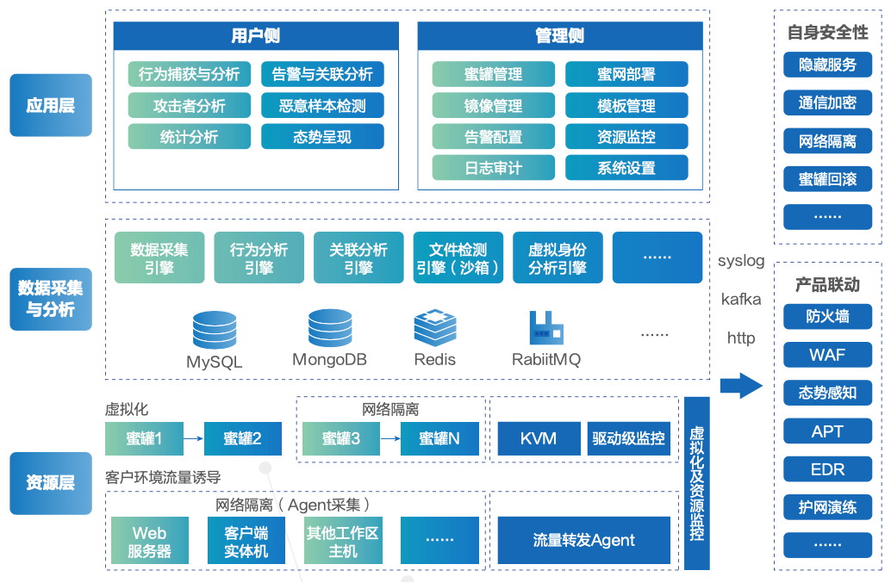
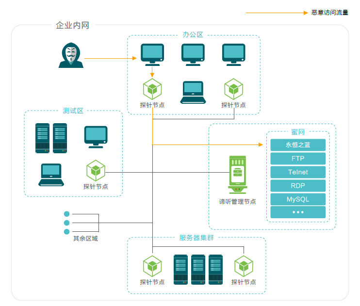
蜜罐后台可对攻击者进行人物画像以下为网络上公开搜索到的当时的蜜罐对攻击者进行的画像方式
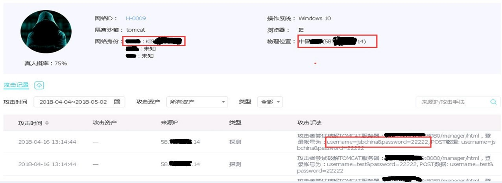
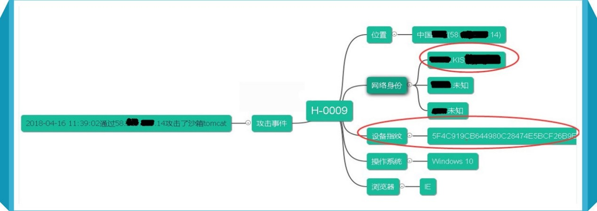
基于特征的蜜罐检测还是目前来看最有效的方式，那么我们需要怎样来有效规避蜜罐？
首先就是对上述特征的检测，除了特征外还需要隐藏自己，首先避免使用常用浏览器直接访问目标，在浏览器中可能有大量信息，当访问蜜罐时可能遭遇类似jsonp劫持等的手段获取到攻击者的个人社交账号，id等信息，以目前的信息泄露水平想要溯源定位到人并不困难，在访问目标时可以尝试使用Tor，Tor的默认高隐私策略可以有效规避这类检测。
避免直接使用0day对目标发动攻击
获取到shell不要急着提权和横向渗透，先做进一步的信息收集
对目标使用多种方式识别（公网目标可使用多种网络空间资产搜索引擎进行扫描，通常该类型产品集成了大量的蜜罐识别规则）
信息收集时加上常见蜜罐后台管理页面地址、端口的扫描，有时可能会发现因为部署不当泄露的后台地址
执行命令时不要使用常见命令，可以试着对常见命令进行编码后解码等操作来避免直接触发防护软件规则